Library
Approved application · approved logoEvery image below is an actual canonical PNG. Open an image for its full resolution. These are authored design scenes, not current-app browser captures.
Browser note 01
fixture-page-comparisonActions and implementation pointers
+ New page · Journal · Explore · All pages · ⌄ · Reflections · › · Reading · Explore this note · Ask Journl · Today’s Journal · Close · Instant · Thinking
apps/web/src/app/(app)/@appSidebar/_components/app-sidebar-pages.tsxapps/web/src/app/(app)/folders/_components/folder-nested-pages-list.tsxapps/web/src/app/(app)/pages/_components/page-editor.tsx

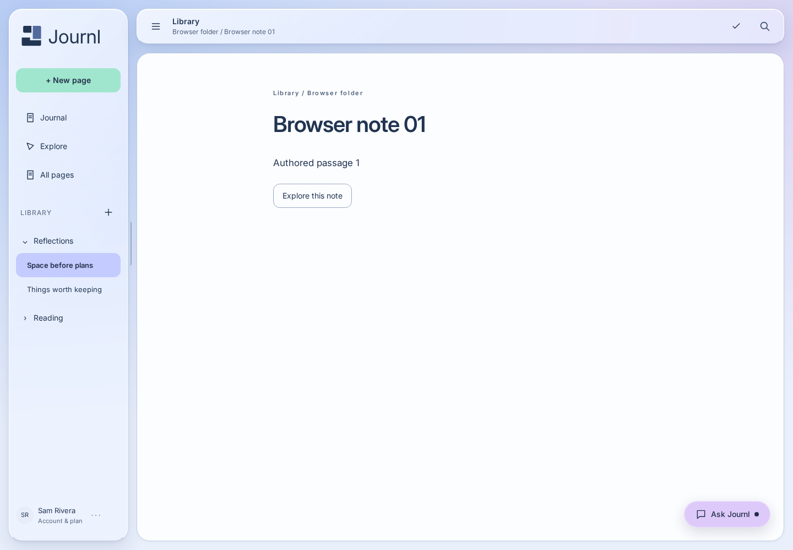
SHA256 91420e108dd3e4cd8ad3d8b82a4e15bf82d6eb601827d73f553f92296bb77a9f

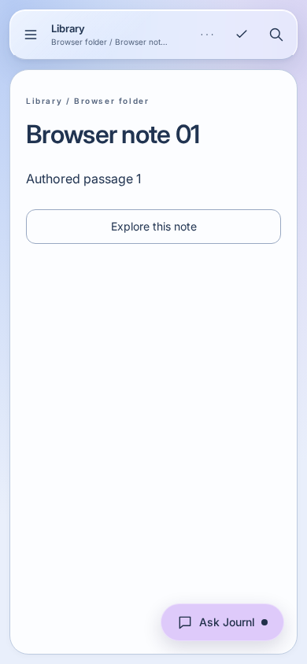
SHA256 a0dde580a53bddc963173677a58caa6165f30fe6c3f2bd5b932d7c2854c2ab13

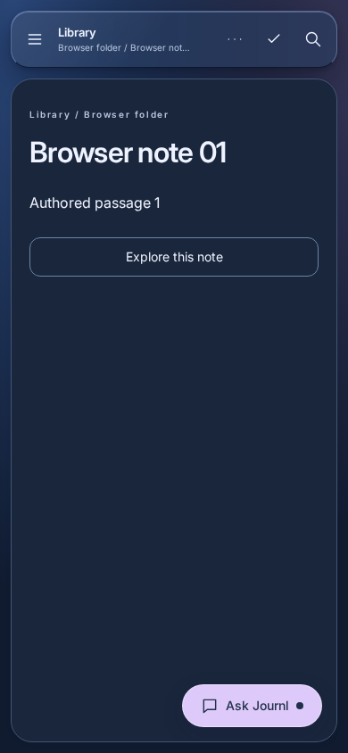
SHA256 fad074c1bb344c04a565e1f2deb781bb2574cf0d629c68f4ae1613262edb6828

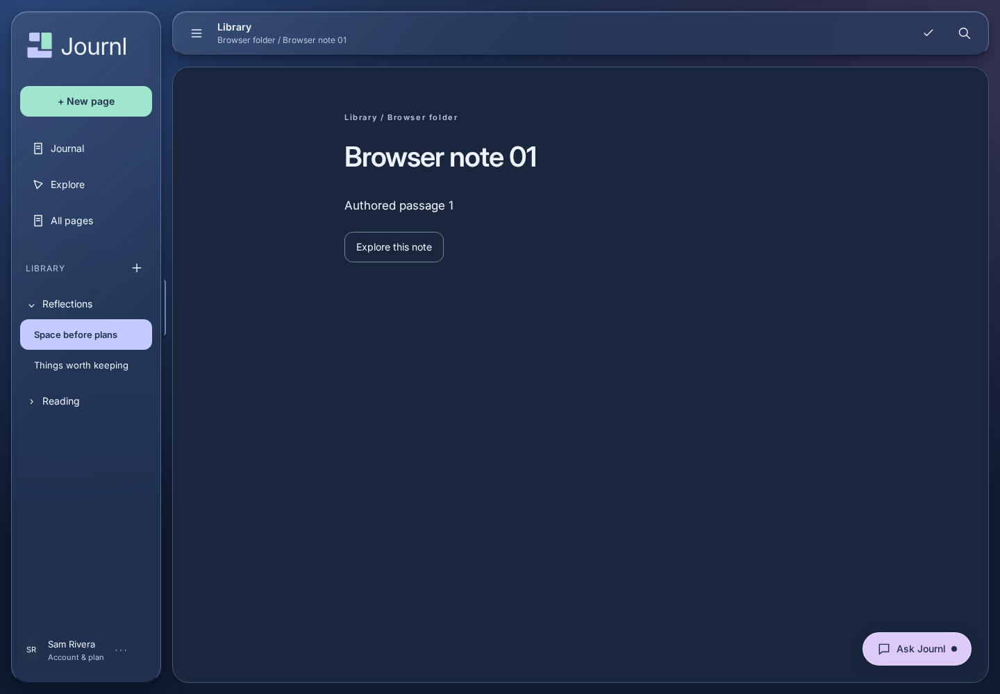
SHA256 db09ad8fbce0dd500a6b7cbe4b199c6169da81ab5afa89202f530c54510c81d0
All pages
all-pages-searchActions and implementation pointers
+ New page · Journal · Explore · All pages · ⌄ · Projects · › · Recipes · References · Folders · A small balcony garden · Ask Journl · Reflections · Reading · Today’s Journal · Close · Instant · Thinking
apps/web/src/app/(app)/@appSidebar/_components/app-sidebar-pages.tsxapps/web/src/app/(app)/folders/_components/folder-nested-pages-list.tsxapps/web/src/app/(app)/pages/_components/page-editor.tsx

SHA256 e5a941d0f36c2a82e19e3b4c447153b50437afb3b7ece72e2bdba0698c8bed46

SHA256 5326502c3ab2c98f57a9bb1c522fc8ab4e1ccf518845263bb9154ce0ab5f0cbe

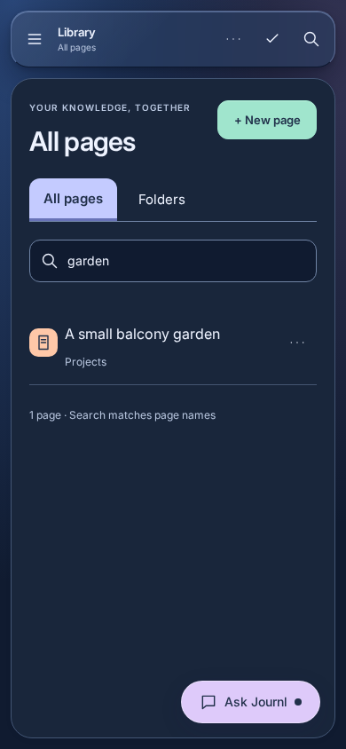
SHA256 c7184995534facae4d67a575ea9e280fb5ff75471892b85834d6a0bb1bab307d

SHA256 e28294233d349c23a375fb42ef398fbac8180a5d0bf6fe86178b7340f46086be
All pages
all-pages-no-resultsActions and implementation pointers
+ New page · Journal · Explore · All pages · ⌄ · Projects · › · Recipes · References · Folders · Clear search · Ask Journl · Reflections · Reading · Today’s Journal · Close · Instant · Thinking
apps/web/src/app/(app)/@appSidebar/_components/app-sidebar-pages.tsxapps/web/src/app/(app)/folders/_components/folder-nested-pages-list.tsxapps/web/src/app/(app)/pages/_components/page-editor.tsx

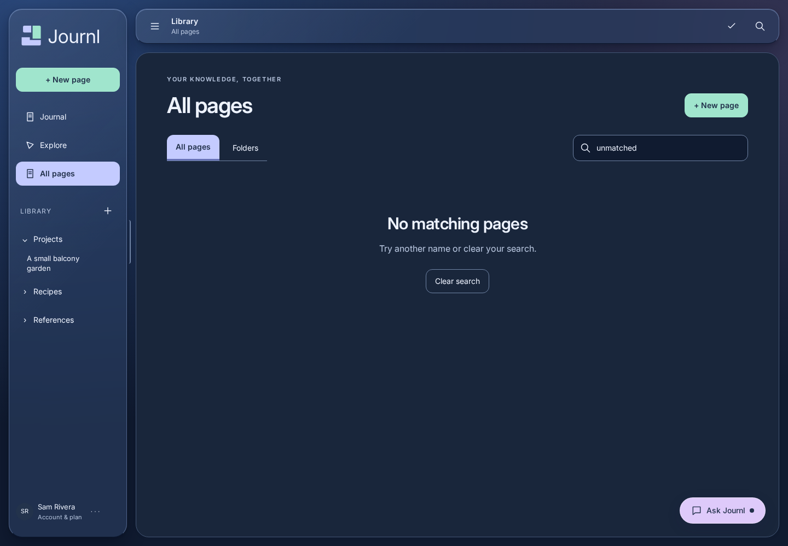
SHA256 4ce3dae91ff38e56873559c66a3b3c74ef52e36b9ec1f0fb1bf81364a7941f7c

SHA256 13ba53c4d23e21074c899b0bf28c0f8a882488f9611e61afa668b5267b2499a4

SHA256 240f995a917c1a560a8f62841e272909f89216fc6b8ee94841e8f9198197709a

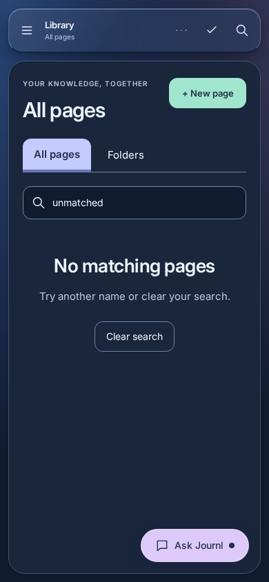
SHA256 c9d13347b085fd64238642a2e1e021437ecc95b6bd2b0d2861aec215700a5915
Folders
library-foldersActions and implementation pointers
+ New page · Journal · Explore · All pages · ⌄ · Projects · › · Recipes · References · + New folder · Folders · Ask Journl · Reflections · Reading · Today’s Journal · Close · Instant · Thinking
apps/web/src/app/(app)/@appSidebar/_components/app-sidebar-pages.tsxapps/web/src/app/(app)/folders/_components/folder-nested-pages-list.tsxapps/web/src/app/(app)/pages/_components/page-editor.tsx

SHA256 5fe310816fcecaf0e9e07a00b048063005a4b532477a8636a50f4031e399b586

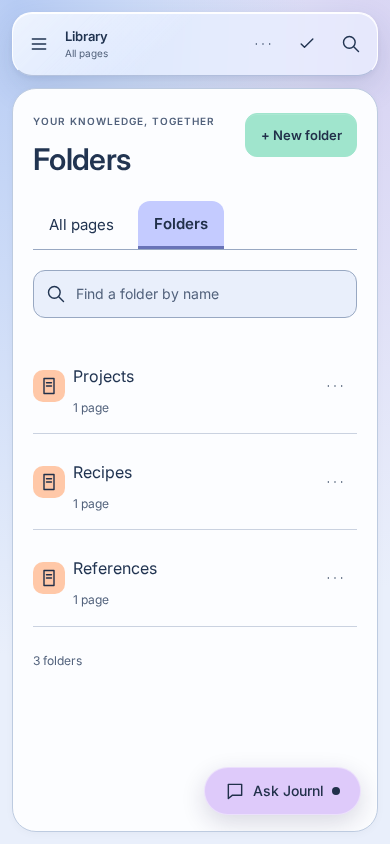
SHA256 c8912667f58ec048671d7ecbe90587eef319f6b90b451d0f9e0be785d7875bd0

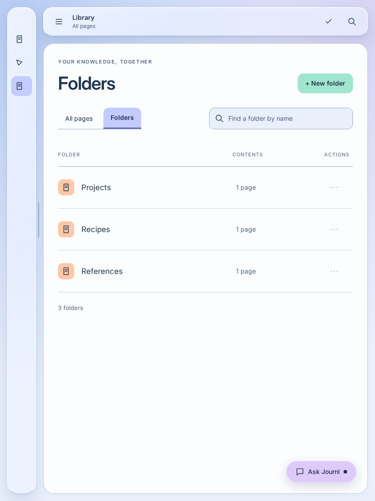
SHA256 a4115673c7d41f824c9909dff95b92882fcc99f6759b66cacf582c432d8b76da

SHA256 f4607c8e2fa66534e68f706f7ec750b7d58defa9583bf4e7aec32b0970b879bc

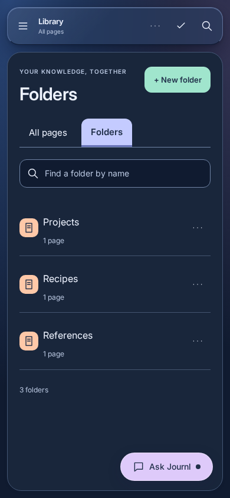
SHA256 d7cd94c1ae72208dd667f6831071387325c8ac1be8e60ecedf6c009689fbf955

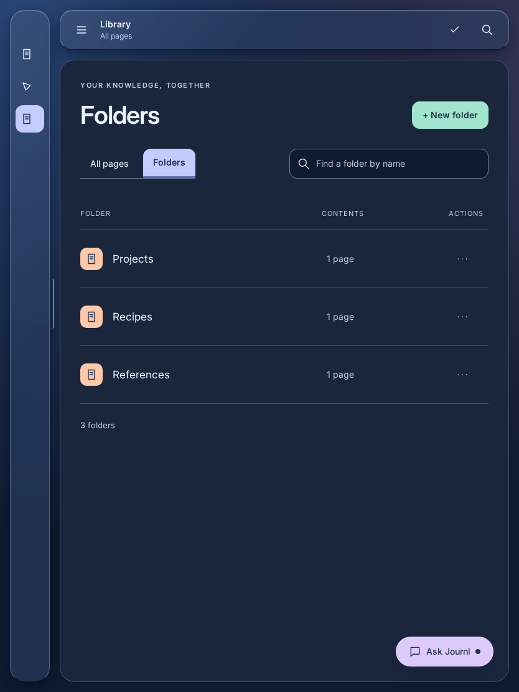
SHA256 6f1e95e41e0bf3d5801a618d88d27969ed08680d1a00362e4182897bdd0b21ff